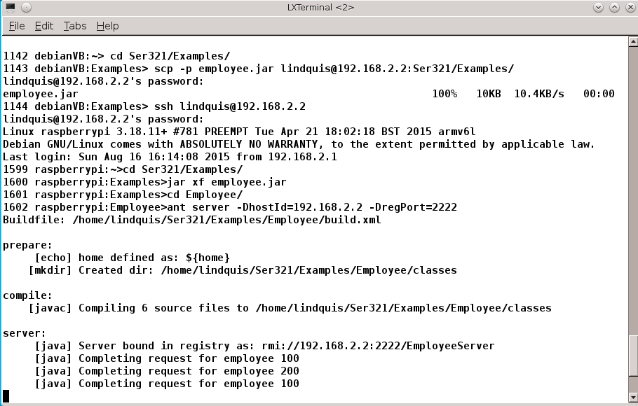
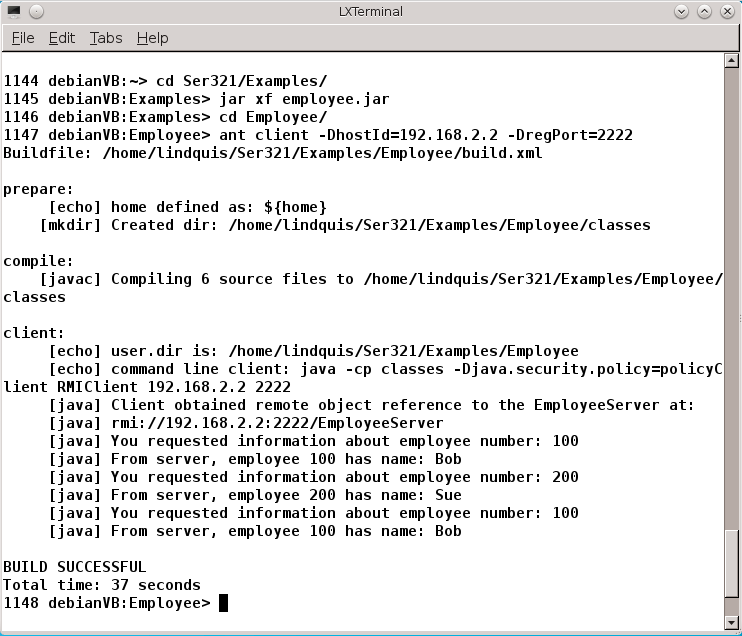

|
Ser321
|
Principles of Distributed Software Systems
|
Assign4: Java RMI with Server on Raspberry Pi and Client on Virtual Box Linux
Due date as specified on the class Blackboard site.
Changes since distribution:
Description
The learning outcomes of this assignment are:
- Ability to apply the distribution middleware framework Java RMI
to client-server distributed applications.
- Experience in configuring networking and system initialization for
a Linux-based minimal computer -- Raspberry Pi.
- Knowledge working with the Ant build tool and the command-line for
developing distributed applications.
Before you start on this assignment, complete
Unit 6: Object-Based Client-Server Communications as described
in the course
detailed schedule. This exercise is to demonstrate a distributed
Java RMI application in which the server is running on Raspberry Pi,
and the client is running on Virtual Box Debian Jessie Linux.
In this assignment you are to complete configuration of your Raspberry Pi
computer with the Raspbian Linux system, and establish the ability
to connect to the computer from your Virtual Box Linux system via ssh.
You will demonstrate successful configuration of the system by submitting
LXTerminal screen shots from your Virtual Box Linux system demonstrating
two machine execution of a Java RMI example. The class web site has a
page outlining how to
Setup Raspberry Pi for Ser321.
You are to submit this assignment as two LXTerminal screen shots. One for
the server and the other for the client. Below is a description of each
screen shot.
- Server. Use the class example
employee.jar and copy it to the Raspberry Pi.
Use ssh to log onto the
Raspberry Pi. Extract the example jar file and change to the Employee
directory. Use the appropriate Ant command to start the server, be sure
to include in the Ant command line the definition of the Raspberry Pi
host name or IP and a port number to use for the RMI Registry. After the
server starts and registers itself with the registry return to the clients LXTerminal.
- Client. On Virtual Box Linux, change to the folder containing the
employee.jar archive. Extract the archive using jar.
Change to the Employee folder.
Enter the appropriate Ant command to cause the client to build and execute.
Be sure to include command line definitions of the hostId and regPort
properties. The hostId should be the IP of the Raspberry Pi (same as used
for the server), and the port should also match the value used on the server
machine.
Below are sample screen shots of the instructors solution to this problem.


What To Hand-In
Submit your solution as a Java archive file (jar) of the project directory
Assign4. Place only the two screen shot files in the Assign4 folder.
Grading your project will be done by extracting the jar and examining
the screen shots.
Hand-in this program using the submission link for this assignment on the course Blackboard site.
When extracted, your solution jar file should create the directory
Assign4
with only your solution files as specified above. Create your jar file from
a command line whose current working directory is Assign4's
parent directory. Execute the command:
jar -cvf assign4myname.jar Assign4/
The instructors solution would be created and named as:
jar -cvf assign4TimLindquist.jar Assign4/
Before you submit the jar file, please do the following:
- Check to assure your solution conforms to the directions on this page.
- Consider the grading criteria as shown below to be sure that you'll
receive full credit for your submission.
Of 20 possible points, they are awarded for:
- Server screen shot follows the directions specified above and the
employee RMI server runs properly on your Raspberry Pi (10 points).
- Client screen shot follows the directions specified above and the
employee RMI client runs properly on your Virtual Box Linux system (10 points).
- Clean your solution directory of any temporary files
before creating the jar file. Extract the solution
in another directory, build and execute the solution to be certain
it works properly.
Email: Tim.Lindquist@asu.edu | Ser321 Home